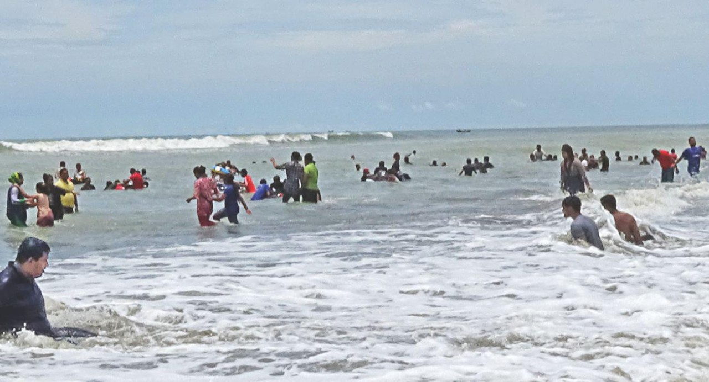
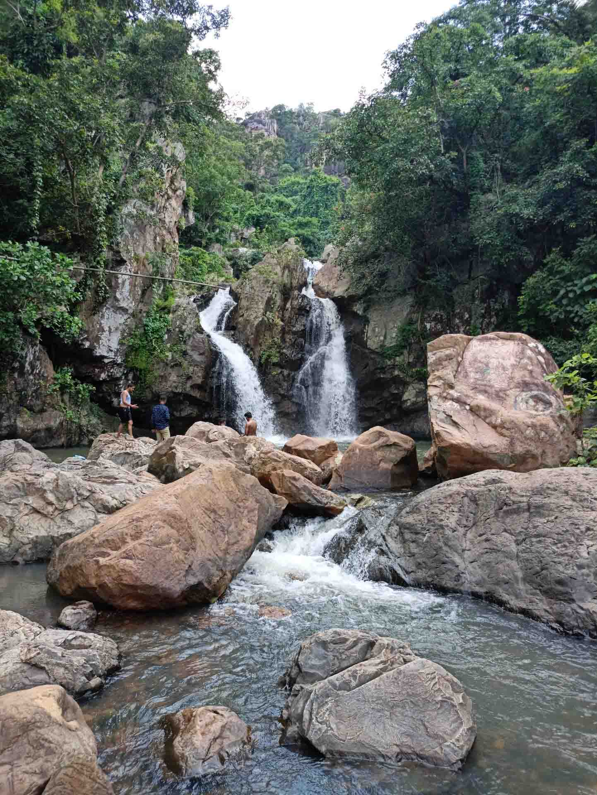
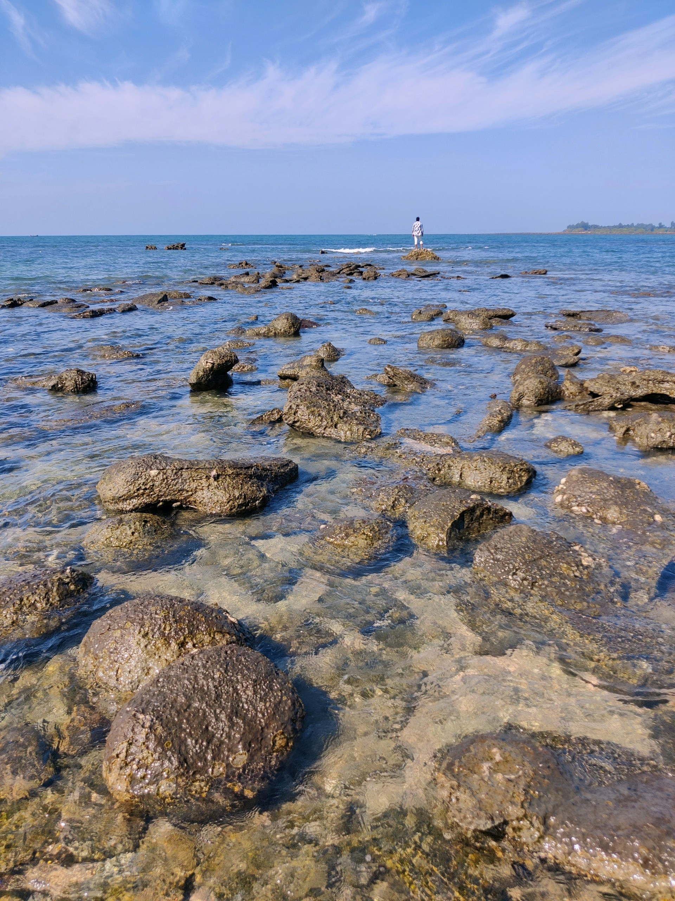
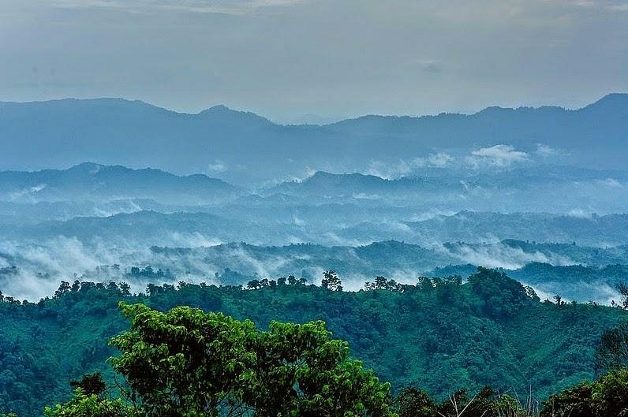

It was my first visit to the Cox's Bazaar i was so excited and it was not holidays so i have had the best view of the sea. As all the other points were crowded we choose Laboni Point to spend our time. The sea was calm and we stayed more than 3 hours there. The view of that place will make you spell bound. We had enjoyed sunset from the sea and it was the best part of my journey.


Teknaf is an upazila in the Cox's Bazar District of Bangladesh. It is the southernmost point on mainland Bangladesh. The name Teknaf comes from the Naf River, which forms the eastern boundary of the upazila.


Here are some things you can do on your first day at Saint Martin's Island in Bangladesh:
It was my first visit to the Cox's Bazaar i was so excited and it was not holidays so i have had the best view of the sea. As all the other points were crowded we choose Laboni Point to spend our time. The sea was calm and we stayed more than 3 hours there. The view of that place will make you spell bound. We had enjoyed sunset from the sea and it was the best part of my journey.
Teknaf is an upazila in the Cox's Bazar District of Bangladesh. It is the southernmost point on mainland Bangladesh. The name Teknaf comes from the Naf River, which forms the eastern boundary of the upazila.
Here are some things you can do on your first day at Saint Martin's Island in Bangladesh:
{kind=link}